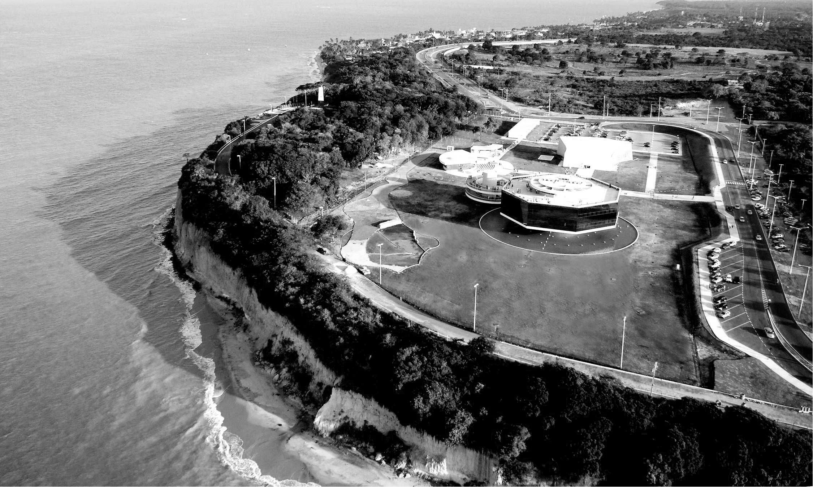

A Estação Cabo Branco - Ciência, Cultura e Artes, popularmente conhecida como Estação ciência, é um equipamento cultural público localizado no bairro do Altiplano. O complexo de projeto do arquiteto Oscar Niemeyer conta com 5 edificações, das quais se destaca a torre octogonal que abriga um espaço de exibições. Inaugurado em 2008, o projeto sofreu críticas pelo impacto ambiental da sua localização em cima da falésia viva do Cabo Branco, que já sofria um processo de erosão que foi acentuado após a supressão de aproximadamente 40 000 m³ de vegetação e pelas obras de construção do equipamento e também da infraestrutura para suporte (como obras viárias e de saneamento). Localizado ao lado do Farol do Cabo Branco, é, com esse último, um dos principais pontos turísticos da cidade, sobretudo na zona litorânea.
